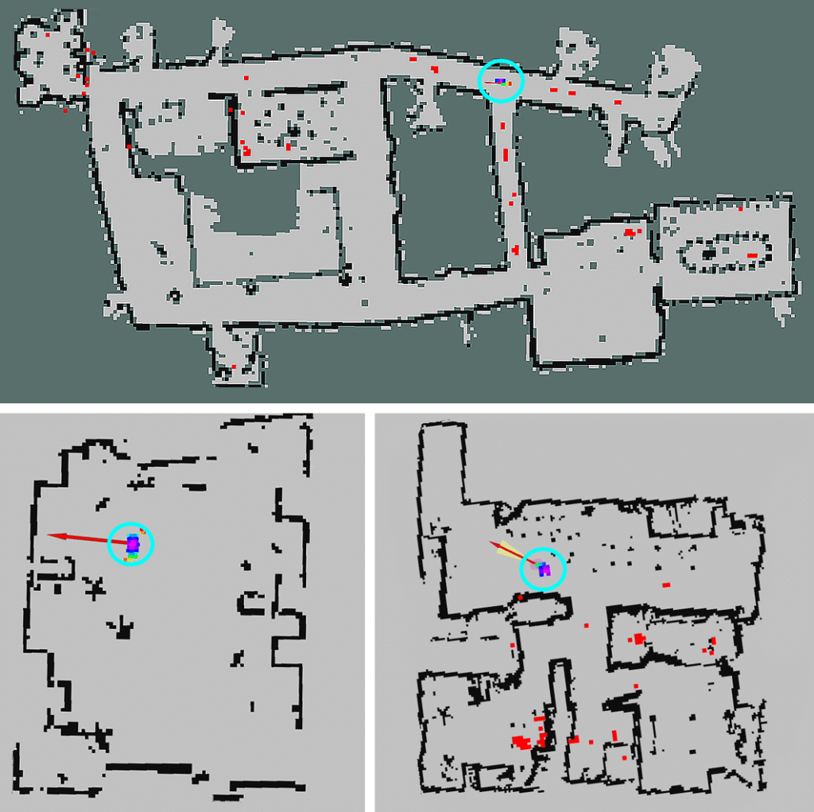

Lifelong Localization in Dynamic Indoor Environments Combining Odometry with Sparse Distance Sampling
To Be Presented at ICRA 2026 (acceptance rate: 38.04%)
We present a lifelong localization framework for planar indoor environments that fuses wheel odometry with sparse LiDAR range measurements into a pose prior integrated over time. We prove convergence to ground truth in static maps and extend the framework to dynamic scenes under learned obstacle dynamics. Empirically, we match dense SLAM-level accuracy using only sixteen sparse measurements, with large savings in sensing cost and bandwidth; open-source code is linked from the project page.
